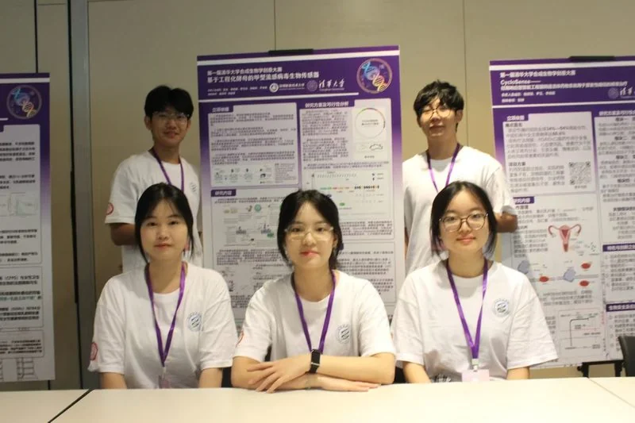
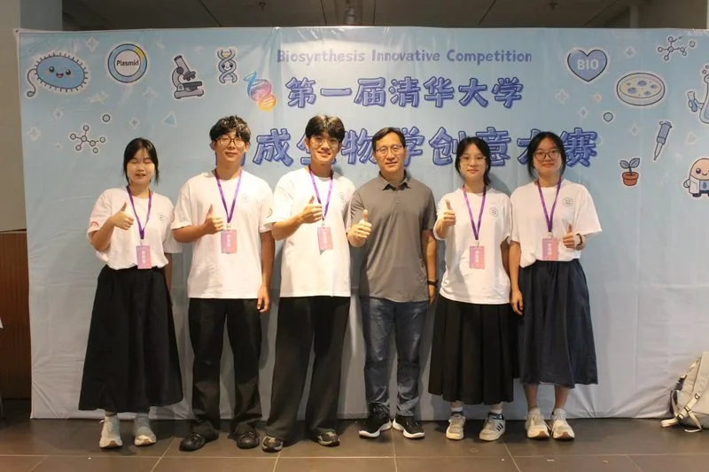
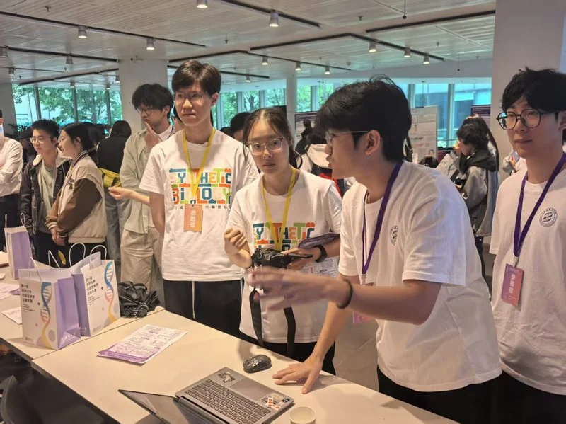
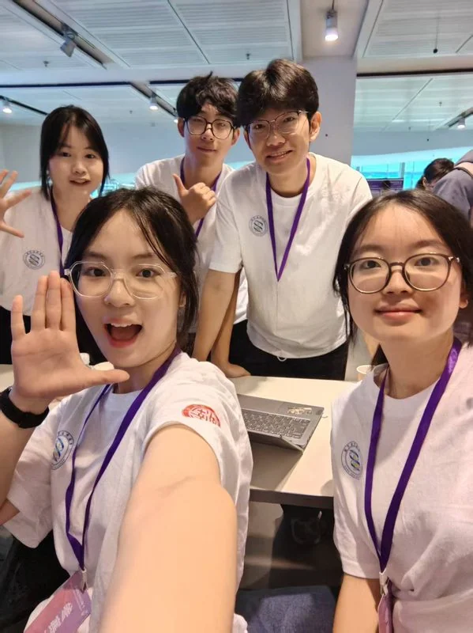
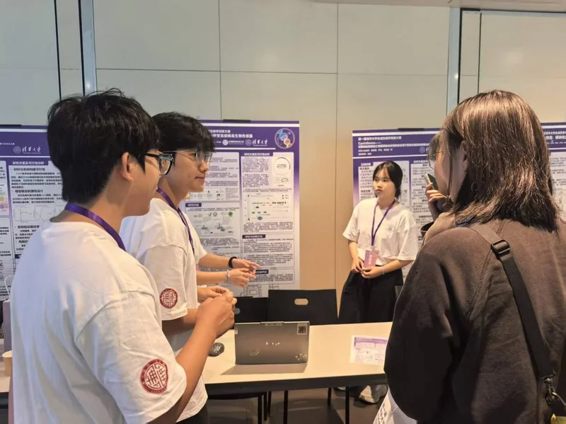
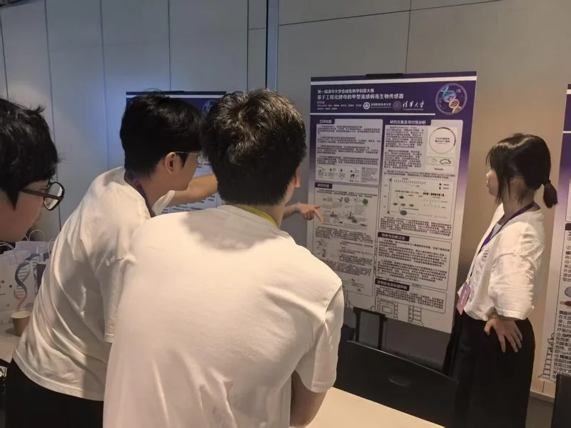

病毒变异与检测重点
甲型流感病毒主要通过血凝素（HA）和神经氨酸酶（NA）蛋白发生变异，而当前医院检测的重点主要在于判断病毒感染情况，而非区分具体亚型。
HP 比赛篇 · 在清华赛场与外界对话






在项目推进到需要对外表达的阶段，团队意识到一个此前在实验室内部不易察觉的问题：我们对自身项目的理解，未必等同于外部观众——尤其是其他合成生物学团队、评审与跨学科师生——对它的理解。封闭环境下的讨论容易形成思维定势，而一场跨校竞赛恰好能把项目放到"陌生人"面前检验。
第一届清华大学合成生物学创意大赛由清华大学主办，以"创意为核心、零门槛为底色"，吸引了包括清华大学、北京大学、同济大学、南方科技大学在内的 44 所高校团队参与。这样一个跨校、跨背景的赛场，为团队提供了难得的外部评价环境：项目不再只面对熟悉的实验室同伴，而是要向陌生的同行解释"我们在做什么、为什么值得做"。
团队最终凭借项目的新颖创意与现场的展示互动，获得了赛事设置的"最具人气魅力奖"。但相较于奖项本身，更值得记录的是团队成员在交流过程中的真实反思——这些反思构成了本次活动最核心的 HP 价值。
多位同学在赛后总结中不约而同地指向"表达"与"理解"：反复的改稿与模拟答辩，让成员得以彻底吃透自己的项目，介绍时从生疏变得得心应手；而在向不同团队讲解项目的过程中，成员也反过来加深了对自身工作的理解。来自其他团队的提问，往往能指出那些因团队内部思维惯性而容易被忽略的新问题。
更重要的是，跨团队的平行交流暴露了项目在应用层面的薄弱。有成员意识到，团队此前对"项目落地场景""社会价值需求"等现实问题的思考还比较浅；也有成员表示，通过了解其他队伍的改造路线，看到了许多此前未曾设想的创新角度，为后续研发打开了新思路。这些反馈并未指向某个具体的实验改动，而是共同提示团队：技术方案之外，项目还需要更扎实地回答"它将在什么场景下、被谁、为了解决什么问题而使用"。
这场比赛没有直接改变团队的技术路线，但它在多个层面调整了团队对项目的理解。
在表达层面，外部反馈印证了"把项目讲清楚"本身就是一项需要专门打磨的能力——奖项所认可的风采展示与生动表达，本质上反映了项目叙事对观众的吸引力。这促使团队在后续工作中更重视表达策略，而非只在技术细节上着力。
在应用层面，多个独立来源（队员自省、其他团队提问）共同指向同一盲区：项目对真实使用场景与社会需求的思考还不够深入。团队据此将"调研真实使用需求、完善落地方案"列为后续需要重点推进的方向，并明确配套硬件仍处于构想阶段、欢迎外部合作。
在协作层面，与志同道合同行的碰撞让团队感受到开放交流的价值，也补充了项目在创意来源与创新角度上的外部输入。这些认识共同提醒团队：HP 不应是赛后的补充材料，而是贯穿项目始终、持续修正团队判断的过程。
HP 探险篇系列 · 华南地区科普交流活动记录
在项目推进到中期阶段时，团队意识到一个关键问题：我们对自己项目的理解，与外部受众（尤其是其他 iGEM 团队和评审）对项目的理解之间，可能存在差距。实验室内部的讨论容易形成思维定势——我们认为清晰的表达，在他人眼中未必如此。
华南地区 iGEM 交流会为团队提供了一个难得的外部评价环境，参与者包括来自华南多所高校的 iGEM 团队以及有经验的评审嘉宾。选择参与此次交流，是希望在与同行的互动中检验项目表达的清晰度，并从外部视角发现团队此前未充分关注的问题。
整场交流按自然的节奏展开，但比流程本身更有价值的是其中浮现的几类反馈。
交流会以线下海报展示环节开场。团队携带项目海报，向到场的其他队伍和评审介绍 SZPU-ECHOYeast 的项目方向与技术路线。海报展示不仅是信息输出，更是一个即时反馈窗口——观察驻足者最先关注哪些内容、提出什么问题，能够直接反映项目表达中哪些部分最吸引人、哪些部分最令人困惑。
在海报展示过程中，团队注意到多数来访者对项目的实际应用场景表现出浓厚兴趣，而对技术细节的追问相对较少。这一观察提示团队：在后续的项目表达中，应优先阐明"解决什么问题"而非"用什么方法解决"。
海报展示之后是自由的队际交流时间。团队与其他参赛队伍进行了深入的一对一对话，分享了各自项目的进展、遇到的瓶颈以及解决方案。这种平行视角的交流尤其有价值——其他团队面临的困境（如实验进度管理、跨学科协作效率、HP 活动设计等），往往与团队自身经历高度重合，但应对方式各不相同。
通过与多个团队的对比交流，团队发现不同队伍在项目叙事结构上存在显著差异：部分团队以技术突破为主线，部分团队以社会需求为切入点，还有团队选择从伦理讨论展开。这种差异促使团队反思自身的叙事策略是否足够清晰地传达了项目的核心价值。
交流会的提问环节是整场活动中信息密度最高的部分。评审和其他团队针对项目提出了多个问题，其中三类反馈尤为值得关注：
关于检测目标的界定：有提问指出，团队对"广谱病毒监测"的覆盖范围描述较为宽泛，建议明确优先针对的病毒类别和应用场景（如医疗机构、公共场所与家庭自测的区分）。这一反馈帮助团队认识到，"广谱"不应意味着模糊，而应在保持技术通用性的同时给出具体的应用入口。
关于生物安全性的考量：多位参会者关注项目中涉及生物材料处理的安全性，尤其是在非实验室环境下部署的可能性。这一问题此前在团队内部虽有讨论，但未被置于项目表达的核心位置。交流会的反馈提示团队，安全性论证应当成为项目可信度的重要组成部分。
关于 HP 与项目的关联性：有评审询问团队的 Human Practices 活动如何具体地回溯影响到了项目设计。这个问题让团队意识到，HP 不应是独立于技术工作的"附加模块"，而需要在叙述中更明确地展现 HP 反馈与技术决策之间的逻辑链条。
华南交流会并未直接改变团队的实验方案或技术路线，但它帮助团队在以下几个层面调整了对项目的理解：
表达层面的优化：外部反馈显示，团队需要重新组织项目叙述的优先级——从"先讲技术再讲应用"调整为"先明确问题再引入方案"。这一调整不涉及技术本身，但会影响评审和公众对项目的第一印象和理解深度。
安全性认知的强化：多个独立来源的同类反馈（生物安全性）说明这并非团队内部过度担忧，而是外部受众普遍关注的议题。团队计划在后续工作中补充安全性相关的实验设计和论证材料。
HP 叙事结构的反思：关于"HP 如何关联项目"的提问，促使团队重新审视当前 HP 页面的组织方式——每篇 HP 文章是否清晰地体现了"获得反馈 → 调整理解"的逻辑链条。本次交流活动本身的记录，也正是按照这一思路进行撰写的。
与临床检验专家王文杰老师的访谈帮助我们跳出“病毒亚型鉴定”的技术执念，将项目方向重新锚定在“快速、广谱、便捷的病毒监测与公共环境预警”上。
专家访谈：听见一线的声音

深圳市妇幼保健院检验科主任 · 南方科技大学医学院教学督导
长期从事新型生物学诊断标志物、肿瘤与自噬等方向研究；担任多个医学检验相关专业委员会职务，在临床检验与体外诊断领域具有丰富经验。
为了深入了解甲型流感病毒检测在真实医疗环境中的应用需求，并进一步明确我们“基于工程化酵母的甲型流感病毒生物传感器”项目的实际价值，我们开展了一次面向临床检验专家的社会实践访谈。在访谈过程中，我们围绕甲型流感病毒的变异特点、现有检测技术的局限性、抗病毒治疗策略以及未来检测设备的发展方向进行了深入交流。
甲型流感病毒主要通过血凝素（HA）和神经氨酸酶（NA）蛋白发生变异，而当前医院检测的重点主要在于判断病毒感染情况，而非区分具体亚型。
现有核酸检测和快速抗原检测通常需要在患者出现症状并达到一定病毒载量后才能发挥作用，检测技术的发展仍存在一定滞后性。
未来检测技术的关键不只是识别病毒类型，而是在更早阶段实现病毒存在的快速监测。在学校、幼儿园、地铁等人员密集环境中，通过环境监测提前发现病毒传播风险，有望帮助公共卫生管理从“被动治疗”转向“主动预防”。
需要充分考虑实际应用中的限制因素，例如检测范围、环境变量以及病毒浓度变化等问题，并建议在后续实验设计中进一步控制变量、明确应用场景。
这次交流帮助我们将实验室中的工程设计与真实临床需求建立联系。专家反馈使我们重新审视传感器的检测目标，从单纯追求病毒亚型识别转向探索更加广谱、快速、便捷的病毒监测方案，也进一步坚定了我们利用合成生物学技术开发新型流感预警工具的方向。通过与临床一线专家的沟通，我们认识到，一个真正具有社会价值的生物技术产品不仅需要实验室中的性能优化，更需要回应现实世界中的医疗需求与公共健康挑战。
走进职业高中开展科普宣讲，让合成生物学走出实验室；学生关于便携性与检测速度的反馈，把“负责任的研究与创新”理念转化为具体的产品优化方向。
深圳市第一职业技术学校坪山校区 · 高二学生科普交流活动


图 2. 校园宣讲现场：团队向高二学生介绍 iGEM 理念与工程化酵母生物传感器项目
为了践行 iGEM 所倡导的科学传播与社会责任理念，并进一步了解公众群体对于甲型流感病毒检测技术的认知与需求，我们走进深圳市第一职业技术学校坪山校区，与高二学生开展了一次项目科普交流活动。本次活动旨在向非专业群体介绍国际基因工程机器大赛（iGEM）的理念与价值，同时展示“基于工程化酵母的甲型流感病毒生物传感器”项目，让更多年轻学生了解合成生物学如何通过跨学科创新解决现实社会问题。
从 iGEM 比赛的发展背景、团队建设模式与科研创新理念，到项目的研究意义、实验原理与未来应用场景，我们尝试打破“科研只存在于实验室”的刻板印象，让学生看到生命科学研究同样需要编程、设计、传播等多领域能力的共同参与。
学生们从实际使用者角度积极提问：检测设备能否进一步便携化？检测时间是否可以再缩短？这些来自潜在用户群体的反馈，让我们重新思考传感器在产品化过程中对便捷性、响应速度以及应用场景适配性的要求。
对参与学生而言，这是一次近距离接触合成生物学与科研创新的机会；对团队而言，把复杂的生物学原理转化为易于理解的语言，也促使我们重新梳理项目逻辑，加深了对技术路线与社会价值的理解。
此次活动不仅是一次项目展示，也是一次双向学习与沟通的过程。我们进一步认识到，一个具有社会价值的生物技术项目不仅需要实验室中的技术突破，也需要与公众建立有效沟通，理解真实需求并持续优化。此次实践推动了项目从单纯的技术研发走向更加开放、负责的创新模式，体现了 iGEM 所倡导的“负责任的研究与创新”理念。

.webp)
.webp)